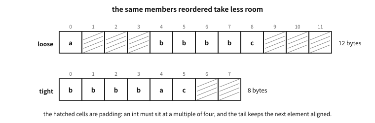
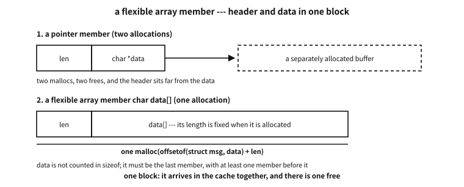
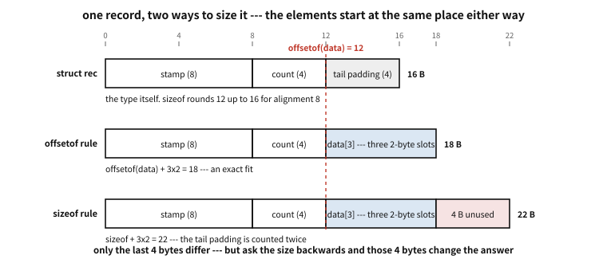

47 Structs
What to know first
Looking back
Chapter 24 said “a type is a set of values plus an agreement about operations”, and every type used so far has been one that already existed (int, double, char, pointers). Then what does it mean for a programmer to make a new type?
A. It is settling a new shape of memory and giving it a name. Declare “I shall call a lump of two integers side by side a point”, and from that moment point is a fully-fledged type from which variables can be made, which can be passed to functions and laid out as an array. If chapter 39′s array was a repetition of the same type, a struct is a bundle of different types — and the moment that bundle gets a name, the program’s vocabulary grows.
The need for this chapter, and its context
-> nor an array member can be explained. Part 8 following part 7 is no accident.By the end of this chapter
. and ->), and how a struct travels as a value.The questions this chapter answers
- Should the biggest member always come first, then?
- Is “filled with zero” not the same thing as “made null” for a pointer?
- Writing
struct pointwithstructevery time is a nuisance — can it not be shortened? - Can a struct hold itself as a member — it seems necessary for making something like a list.
- What if a function returns such a struct by value — is the receiver’s array overwritten, or does it keep what it had?
(In chapter 27′s families a struct was both an aggregate type and a derived type. This chapter is the inside of that cell.)
47.1 Declaration, initialisation, access
examples-en/ch46/point.c
#include <stdio.h>
struct point {
int x;
int y;
};
struct point moved(struct point p, int dx, int dy)
{
return (struct point){ .x = p.x + dx, .y = p.y + dy }; /* a compound literal */
}
int main(void)
{
struct point a = { .x = 3, .y = 4 }; /* designated initialisation */
struct point b = moved(a, 10, -1);
printf("a = (%d, %d)\n", a.x, a.y); /* access through a value: . */
printf("b = (%d, %d)\n", b.x, b.y);
struct point *p = &b;
printf("p->x = %d\n", p->x); /* access through a pointer: -> */
printf("sizeof(struct point) = %zu\n", sizeof(struct point));
return 0;
}
Output
a = (3, 4)
b = (13, 3)
p->x = 13
sizeof(struct point) = 8
Declaration is struct point { int x; int y; }; — each item inside the braces is called a member. The declaration itself takes no memory. It is only a definition saying “a type of this shape exists”; a variable appears when you write struct point a;.
For initialisation we recommend, as in the demonstration, writing the member names — the designated initializer (C99): { .x = 3, .y = 4 }. It reads better than the order-dependent {3, 4} and stays safe if members are added or reordered. Members not written are filled with 0.
Access has two notations — a dot for a value (a.x), an arrow for a pointer (p->x). The arrow is in fact an abbreviation of (*p).x (chapter 36′s dereference plus dot). Handling structs through pointers is overwhelmingly common, which is why it got its own notation.
Compound literal — the demonstration’s (struct point){ .x = ..., .y = ... } is the notation for “making one unnamed struct value on the spot” (C99). It is useful for handing a struct over immediately as a return value or an argument.
47.2 The first surprise of sizeof — not the sum of the members
Make a struct, ask for its size, and the guess is usually wrong.
examples-en/ch46/sizeof_first.c
/* Why the sum of member sizes is not the struct's size — print the layout. */
#include <stddef.h>
#include <stdio.h>
/* the same members, only the order differs */
struct loose { char a; int b; char c; }; /* a big one between small ones */
struct tight { int b; char a; char c; }; /* biggest first */
int main(void)
{
printf("sum of member sizes: %zu + %zu + %zu = %zu bytes\n",
sizeof(char), sizeof(int), sizeof(char),
sizeof(char) * 2 + sizeof(int));
printf("\nstruct loose { char a; int b; char c; }\n");
printf(" sizeof = %zu, _Alignof = %zu\n",
sizeof(struct loose), alignof(struct loose));
printf(" offsetof(a) = %zu, offsetof(b) = %zu, offsetof(c) = %zu\n",
offsetof(struct loose, a), offsetof(struct loose, b),
offsetof(struct loose, c));
printf("\nstruct tight { int b; char a; char c; }\n");
printf(" sizeof = %zu, _Alignof = %zu\n",
sizeof(struct tight), alignof(struct tight));
printf(" offsetof(b) = %zu, offsetof(a) = %zu, offsetof(c) = %zu\n",
offsetof(struct tight, b), offsetof(struct tight, a),
offsetof(struct tight, c));
/* draw the layout: named cells for members, dots for the gaps */
puts("\ncell by cell (numbers are offsets, dots are padding):");
for (size_t i = 0; i < sizeof(struct loose); i++) {
char mark = '.';
if (i == offsetof(struct loose, a)) mark = 'a';
else if (i >= offsetof(struct loose, b)
&& i < offsetof(struct loose, b) + sizeof(int)) mark = 'b';
else if (i == offsetof(struct loose, c)) mark = 'c';
printf("%c", mark);
}
printf(" <- loose (%zu bytes)\n", sizeof(struct loose));
for (size_t i = 0; i < sizeof(struct tight); i++) {
char mark = '.';
if (i < sizeof(int)) mark = 'b';
else if (i == offsetof(struct tight, a)) mark = 'a';
else if (i == offsetof(struct tight, c)) mark = 'c';
printf("%c", mark);
}
printf(" <- tight (%zu bytes)\n", sizeof(struct tight));
/* laid out as an array, the difference multiplies */
printf("\nwith a million elements: loose %zu MiB, tight %zu MiB\n",
sizeof(struct loose) * 1000000u / (1024 * 1024),
sizeof(struct tight) * 1000000u / (1024 * 1024));
return 0;
}
Output
sum of member sizes: 1 + 4 + 1 = 6 bytes
struct loose { char a; int b; char c; }
sizeof = 12, _Alignof = 4
offsetof(a) = 0, offsetof(b) = 4, offsetof(c) = 8
struct tight { int b; char a; char c; }
sizeof = 8, _Alignof = 4
offsetof(b) = 0, offsetof(a) = 4, offsetof(c) = 5
cell by cell (numbers are offsets, dots are padding):
a...bbbbc... <- loose (12 bytes)
bbbbac.. <- tight (8 bytes)
with a million elements: loose 11 MiB, tight 7 MiB
char + int + char looks like six bytes; it is twelve. The extra six are padding — empty space between the members and at the end.

Figure 47.1 — The hatched cells are padding. Each member sits at a multiple of its alignment, and space is added at the end too.
The reason is chapter 4′s alignment. An int must sit at an address that is a multiple of four, so three bytes go empty after the first char, and three more after the last one — because when this struct is laid out as an array, the next element’s int must be aligned too.
There are only three rules.
- Each member sits at an offset that is a multiple of its own alignment.
- The struct’s alignment is the maximum of its members’ alignments.
- The struct’s size is rounded up to a multiple of that alignment (tail padding).
So changing only the order can shrink it. The demonstration’s tight puts the big one first and turns twelve bytes into eight. With a million elements that is 11 MiB against 7 MiB — and not only memory: the number of elements that fit in cache changes with it (chapter 12).
The tool for seeing the layout is offsetof from <stddef.h>; the demonstration uses it to print where each member starts. “If it differs from what you thought, ask” is the knack here.
Q. Should the biggest member always come first, then?
A. It makes a fine default but a poor rule. A readable order often matters more (keeping related members together), and where only one struct is ever made, a few bytes are nothing.
The places to think about order are clear — when very many of the same struct are laid out (arrays, pools, nodes), and where memory is tight (embedded). Elsewhere it is enough to print the size once and not be surprised.
The devices for removing padding (#pragma pack, packed) and for raising alignment (alignas) are in chapter 48. What to know first is that they are either non-standard or have a price.
47.3 Zeroing the whole thing — { 0 } and { }
The previous section passed over “members you leave out are filled with zero” in a single clause. That clause is the foundation of an idiom used every day, so it is worth a section of its own.
struct config c = {0}; /* the old idiom */
struct config c = {}; /* C23 onwards — the empty initializer */examples-en/ch46/zeroinit.c
/* Zeroing a whole struct — { 0 } and C23's { } null out pointer members too. */
#include <stdio.h>
#include <string.h>
struct inner { int k; char *note; };
struct config {
int retries;
char *path; /* a pointer member */
double ratio;
struct inner in; /* which contains another pointer */
char name[4];
};
static void dump(const char *tag, const struct config *c)
{
printf("%s retries=%d path=%s ratio=%g in.k=%d in.note=%s name[0]=%d\n",
tag, c->retries,
c->path == NULL ? "null" : "not null",
c->ratio, c->in.k,
c->in.note == NULL ? "null" : "not null",
c->name[0]);
}
static void bytes(const char *tag, const void *p, size_t n)
{
const unsigned char *b = p;
size_t zero = 0;
for (size_t i = 0; i < n; i++)
zero += (b[i] == 0);
printf("%s %zu of %zu bytes are zero\n", tag, zero, n);
}
int main(void)
{
struct config a = {0}; /* only the first member is spelled out */
struct config b = {}; /* C23: empty initializer — whole object */
dump("{0} :", &a);
dump("{ } :", &b);
/* Designated initializers behave the same: what you leave out is
default-initialized. */
struct config c = { .retries = 3 };
dump("{.retries=3}:", &c);
/* memset writes all-bits-zero, which is not the same promise as "null" —
the same here, but the standard does not guarantee it. */
struct config m;
memset(&m, 0, sizeof m);
printf("after memset, is path null? %s (on this implementation)\n",
m.path == NULL ? "yes" : "no");
printf("\nsizeof(struct config) = %zu, sum of member sizes = %zu"
" — the difference is padding\n",
sizeof(struct config),
sizeof(int) + sizeof(char *) + sizeof(double)
+ sizeof(struct inner) + 4);
bytes("{0} :", &a, sizeof a);
bytes("{ } :", &b, sizeof b);
return 0;
}
Output
{0} : retries=0 path=null ratio=0 in.k=0 in.note=null name[0]=0
{ } : retries=0 path=null ratio=0 in.k=0 in.note=null name[0]=0
{.retries=3}: retries=3 path=null ratio=0 in.k=0 in.note=null name[0]=0
after memset, is path null? yes (on this implementation)
sizeof(struct config) = 48, sum of member sizes = 40 — the difference is padding
{0} : 48 of 48 bytes are zero
{ } : 48 of 48 bytes are zero
47.3.1 What is actually guaranteed
The standard (C23 §6.7.11) gives this a name: default initialization. Anything not initialised explicitly is filled in as follows.
| Type of the member | What it is filled with |
|---|---|
| Pointer | A null pointer |
| Arithmetic type (integer, floating) | (positive or unsigned) zero |
| Decimal floating type | Positive zero; the quantum exponent is implementation-defined |
| Aggregate (struct, array, union) | The same rules again, recursively |
Table 47.1 — What { 0 } puts in, by member type
That answers this section’s central question: pointer members are initialised to null — recursively, including pointers inside nested structs. In the demonstration both path and in.note come out null.
Q. Is “filled with zero” not the same thing as “made null” for a pointer?
A. On the overwhelming majority of implementations the result is the same, but the promise is a different promise.
What the standard guarantees is “becomes a null pointer value”, not “becomes all-bits-zero” (chapter 37, on what null really is). Implementations where the representation of null is not all-bits-zero have existed, and the standard still leaves room for them. So {0} and {} give you null everywhere, while memset(&c, 0, sizeof c) only ever gives you all-bits-zero. On an implementation where those two promises come apart, the latter is not null.
Chapter 37′s demonstration empties this very struct both ways and prints the bytes side by side — on this machine the results agree, and the promises do not. The same goes for floating point: {0} promises the value 0.0, memset promises a bit pattern. The working rule is simple — use an initializer to empty a struct, and keep memset for other purposes (such as the padding question below).
47.3.2 The fine difference between {0} and {} — padding
They are nearly the same, and they part company in one place. For an aggregate subject to default initialization, C23 states that any padding is initialized to zero bits. With {} the whole object is subject to default initialization, so the gaps between members are zero too. With {0} the first member is initialised explicitly, so what gets default initialization is the remaining members — the struct’s own padding bytes are not covered, and their values are unspecified.
In the demonstration all 48 bytes come out zero, but that is this implementation’s behaviour, not a promise.
The distinction is usually irrelevant, and then suddenly matters when you compare whole structs with memcmp or write them out byte-wise to a file or a socket. The rule for those cases:
- You only need the values to be right →
{0}or{}. - The padding must be zero too (comparison, serialisation) →
{}in C23; otherwisememsetfirst and then assign the members you need.
A common misconception. “{0} only zeroes the first member”
It does not. {0} spells out one member, but everything left out is default-initialised (§6.7.11). A struct with a hundred members is fully zeroed and nulled by that one {0}.
The inverted misconception is just as common: “if I write only { .retries = 3 }, the rest is garbage.” Also false. Designated or positional, if there is any initializer at all, the members you leave out are default-initialised — the third line of the demonstration is the check. Garbage is what you get when there is no initializer whatsoever (struct config c;).
Platform note. Can you use `{}`?
{} became standard in C23. GCC and Clang accepted it as an extension before that, but such code was not portable. If you must also support C17 and earlier, use {0} — bearing in mind that when the first member is itself a struct or an array, some compilers warn and you end up writing { {0} }. Not having that annoyance is another point in favour of {}.47.4 A struct is a value
In C a struct is treated like a value — assign it and it is copied whole, pass it to a function and it crosses over copied, exactly by chapter 34′s rule, and it can be returned whole with return. The demonstration’s moved(a, 10, -1) is the check: a is unchanged and a new value b came out.
This copying is a shallow copy that transcribes the members as they are. If all the members are numbers there is no problem, but if a member is a pointer the address is duplicated as it is, so original and copy point at the same place — this fact becomes a decisive trap later when handling data that points at itself.
In practice, though, rather than passing large structs by value it is common to pass a pointer — to save the cost of copying (recall chapter 12′s ladder of memory and it is clear that copying a large lump is not free). When only reading, the practice is to receive it as a const pointer, as in const struct point *p — chapter 24′s const working as a contract mark saying “this function does not touch the original.”
Q. Writing struct point with struct every time is a nuisance — can it not be shortened?
A. Traditionally an alias has been made with typedef — typedef struct point point_t; and the like. But this is a point where taste and schools divide (there is the counter-argument that an alias hides the information “this is a struct”), so this book writes struct so the identity is visible on the page. Either way, consistency is what matters.
Q. Can a struct hold itself as a member — it seems necessary for making something like a list.
A. It cannot hold itself by value (the size would be infinite). But it can hold a pointer to itself, and that is precisely the seed of linked data structures: struct node { int value; struct node *next; };. Let chapter 36′s pointers and chapter 46′s dynamic memory meet in that one line and structures such as linked lists and trees open up — a world of data structures beyond this book’s scope, but worth knowing that the key that opens the door is here.
47.4.1 Why assignment works but comparison does not
A struct is a value, so b = a; copies the whole thing in one line. Yet a == b does not exist — it is a compile error. Why does assignment work and comparison not?
Because of padding. Assignment can be defined as “move the members’ values”, but comparison has to answer “are they equal”, and the value of the padding is not specified. Two structs holding the same values may hold different rubbish in their padding, and comparing bit by bit then says “different”.
A common misconception. “Then compare them with memcmp”
The commonest substitute, and quietly wrong. memcmp compares representations — it looks at the padding as well as the members.
Chapter 48′s demonstration shows this in the flesh: two structs whose members are all equal, and memcmp reports “different”. The opposite accident exists too — if the padding happens to match, it says “equal”, but that is luck, not a contract.
For the same reason a struct must not be hashed whole (equal values give different hashes) and must not be written whole to a file or a socket (chapter 48 goes into it).
There is one prescription — write a function that compares member by member.
bool point_eq(struct point a, struct point b)
{ return a.x == b.x && a.y == b.y; }47.5 Header and data in one block — the flexible array member
A struct followed by data of no fixed length is a very common shape — messages, packets, nodes holding a string. C99 made the pattern official.
A flexible array member is the last member of a struct: an array with its size left empty.

Figure 47.2 — Header and data in one block — two allocations become one.
Figure 47.2 shows the same data held two ways. Above (char *data) the header and the data sit apart: two mallocs, two frees, and the two arrive in the cache separately. Below is the flexible array member — allocated once, freed once.
examples-en/ch46/flexible.c
/* The flexible array member — C99's way to take header and data in one block. */
#include <stdckdint.h>
#include <stddef.h>
#include <stdio.h>
#include <stdlib.h>
#include <string.h>
/* Leave the last member's size empty and it is a flexible array member.
It is not counted in sizeof — the size is decided when allocating. */
struct msg {
unsigned kind;
size_t len;
char data[]; /* <- the flexible array member */
};
/* size = header + data. Skip the overflow check and a big array lands in a small vessel. */
static struct msg *msg_new(unsigned kind, const char *text)
{
size_t len = strlen(text);
size_t need;
/* offsetof(struct msg, data) is more exact than sizeof(struct msg) —
it does not count the tail padding twice. */
if (ckd_add(&need, offsetof(struct msg, data), len)) return nullptr;
struct msg *m = malloc(need);
if (!m) return nullptr;
m->kind = kind;
m->len = len;
memcpy(m->data, text, len);
return m;
}
int main(void)
{
printf("sizeof(struct msg) = %zu <- data is not counted\n",
sizeof(struct msg));
printf("offsetof(struct msg, data) = %zu\n", offsetof(struct msg, data));
printf("alignof(struct msg) = %zu\n", alignof(struct msg));
const char *text = "hello, world!";
struct msg *m = msg_new(7, text);
if (!m) { perror("malloc"); return 1; }
printf("\nallocated = offsetof(data) + %zu = %zu bytes\n",
m->len, offsetof(struct msg, data) + m->len);
printf("kind = %u, len = %zu, data = \"%.*s\"\n",
m->kind, m->len, (int)m->len, m->data);
/* header and data are one block, so one free */
free(m);
puts("\nHow the old practice differed:");
puts(" char data[1]; <- the 'struct hack'. The size arithmetic was off by one,");
puts(" and it accessed past the array — outside the contract.");
puts(" char data[]; <- what C99 made official. Inside the contract.");
return 0;
}
Output
sizeof(struct msg) = 16 <- data is not counted
offsetof(struct msg, data) = 16
alignof(struct msg) = 8
allocated = offsetof(data) + 13 = 29 bytes
kind = 7, len = 13, data = "hello, world!"
How the old practice differed:
char data[1]; <- the 'struct hack'. The size arithmetic was off by one,
and it accessed past the array — outside the contract.
char data[]; <- what C99 made official. Inside the contract.
Three things are the contract.
- It must be last, and at least one other member must precede it.
- It is not included in
sizeof. Thatsizeof(struct msg)andoffsetof(struct msg, data)printed the same value says exactly that. - The size is decided when allocating.
malloc(offsetof(…, data) + length)is the standard form.
The length arithmetic must be checked for overflow (chapter 80) — a large length that wraps around means writing large data into a small vessel, which is precisely a heap overflow.
47.5.1 sizeof and offsetof — which one sizes the allocation
A flexible array member lives inside the struct, and it is the last member. It is placed by the same rule as every other member: at its own type’s alignment (the alignment and padding of chapter 48). So between the member before it and this last one there may or may not be padding. What decides is where the previous member ended and what the array’s element type is.
There is therefore only one correct way to compute the size.
The mathematics. The arithmetic for allocating one
malloc(offsetof(struct s, data) + n * sizeof(data[0]))
Counted from where the array begins, not from where the header ends. What sets that position is where the previous member ended and what the element type is, so this expression holds whether or not padding sits in between.
Why starting from sizeof(struct s) will not do becomes obvious with an example. Two structs whose first three members are identical and whose last differs:
struct s1 { uint16_t a; uint32_t b; uint16_t c; uint32_t data[]; };
struct s2 { uint16_t a; uint32_t b; uint16_t c; char data[]; };
Figure 47.3 — Same leading members; the last member’s type moves where the array begins.
Figure 47.3 lays both over a scale of bytes. c ends at offset 8 in both, yet data begins in different places. In s1 it is uint32_t, alignment 4, so it is pushed to offset 12 and two bytes are left empty. In s2 it is char, alignment 1, so it begins at offset 10 — directly after c, with no gap.
examples-en/ch46/flex_size.c
/* Where a flexible array member sits, and how to size it. The two structs have
exactly the same first three members and differ only in the last one. */
#include <stddef.h>
#include <stdint.h>
#include <stdio.h>
#include <stdlib.h>
/* A flexible array member sits at *its own type's* alignment.
data is uint32_t (align 4), so two bytes are left empty after c. */
struct s1 { uint16_t a; uint32_t b; uint16_t c; uint32_t data[]; };
/* data is char (align 1), so it follows c directly --- no gap. */
struct s2 { uint16_t a; uint32_t b; uint16_t c; char data[]; };
/* The correct size to allocate: offsetof(type, data) + n * sizeof(data[0]) */
#define NEED(type, member, n) (offsetof(type, member) + (n) * sizeof(((type *)0)->member[0]))
static void layout(const char *name, size_t a, size_t b, size_t c,
size_t data, size_t size, size_t align, size_t elem)
{
printf(" %s: a=%zu b=%zu c=%zu data=%zu | sizeof=%zu alignof=%zu"
" sizeof(data[0])=%zu\n", name, a, b, c, data, size, align, elem);
printf(" padding before data: %zu byte(s)\n", data - (c + sizeof(uint16_t)));
}
int main(void)
{
puts("(1) the same three members, a different last member");
layout("s1", offsetof(struct s1, a), offsetof(struct s1, b),
offsetof(struct s1, c), offsetof(struct s1, data),
sizeof(struct s1), alignof(struct s1), sizeof(((struct s1 *)0)->data[0]));
layout("s2", offsetof(struct s2, a), offsetof(struct s2, b),
offsetof(struct s2, c), offsetof(struct s2, data),
sizeof(struct s2), alignof(struct s2), sizeof(((struct s2 *)0)->data[0]));
puts("\n the flexible array member sits at its own type's alignment:");
puts(" s1: data is uint32_t (align 4) -> two bytes of padding appear before it");
puts(" s2: data is char (align 1) -> it follows c directly, no padding");
puts(" both structs have the same sizeof, and it says nothing about where data is.");
puts("\n(2) how many bytes to allocate for n elements");
puts(" n | s1: offsetof rule | sizeof rule | s2: offsetof rule | sizeof rule");
for (size_t n = 0; n <= 3; n++)
printf(" %2zu | %17zu | %11zu | %17zu | %11zu\n", n,
NEED(struct s1, data, n), sizeof(struct s1) + n * 4,
NEED(struct s2, data, n), sizeof(struct s2) + n * 1);
puts(" for s1 the two rules agree by accident (offsetof == sizeof == 12).");
puts(" for s2 they never agree: the sizeof rule counts the tail padding twice.");
puts("\n(3) the same arithmetic, run backwards: how many elements are in a buffer?");
size_t buf = NEED(struct s2, data, 3); /* exactly the size that holds three */
printf(" a %zu-byte s2 record holds exactly 3 elements\n", buf);
printf(" offsetof rule: (%zu - %zu) / 1 = %zu <- right\n",
buf, offsetof(struct s2, data), buf - offsetof(struct s2, data));
printf(" sizeof rule: (%zu - %zu) / 1 = %zu <- two elements lost\n",
buf, sizeof(struct s2), buf - sizeof(struct s2));
puts("\n(4) is an empty record well formed?");
printf(" an empty s2 record is %zu bytes on the wire\n", NEED(struct s2, data, 0));
printf(" \"len >= offsetof(data)\" -> %s <- right\n",
NEED(struct s2, data, 0) >= offsetof(struct s2, data) ? "accepted" : "REJECTED");
printf(" \"len >= sizeof(struct)\" -> %s <- a valid record thrown away\n",
NEED(struct s2, data, 0) >= sizeof(struct s2) ? "accepted" : "REJECTED");
puts("\n(5) the price of the exact fit");
printf(" s2 with one element needs %zu bytes, but sizeof(struct s2) is %zu\n",
NEED(struct s2, data, 1), sizeof(struct s2));
puts(" so the object is smaller than its own type: *a = *b, memcpy(a, b, sizeof *a),");
puts(" or passing it by value would run past the end of the allocation.");
puts(" a struct with a flexible array member is copied field by field, never whole.");
/* allocate for real, and see where the last element ends */
size_t n = 3;
struct s2 *r = malloc(NEED(struct s2, data, n));
if (!r) { perror("malloc"); return 1; }
r->a = 1; r->b = 2; r->c = 3;
for (size_t i = 0; i < n; i++) r->data[i] = (char)('A' + i);
printf("\n allocated %zu bytes; data[%zu] ends at offset %zu; data = %.3s\n",
NEED(struct s2, data, n), n - 1,
offsetof(struct s2, data) + n * sizeof r->data[0], r->data);
free(r);
return 0;
}
Output
(1) the same three members, a different last member
s1: a=0 b=4 c=8 data=12 | sizeof=12 alignof=4 sizeof(data[0])=4
padding before data: 2 byte(s)
s2: a=0 b=4 c=8 data=10 | sizeof=12 alignof=4 sizeof(data[0])=1
padding before data: 0 byte(s)
the flexible array member sits at its own type's alignment:
s1: data is uint32_t (align 4) -> two bytes of padding appear before it
s2: data is char (align 1) -> it follows c directly, no padding
both structs have the same sizeof, and it says nothing about where data is.
(2) how many bytes to allocate for n elements
n | s1: offsetof rule | sizeof rule | s2: offsetof rule | sizeof rule
0 | 12 | 12 | 10 | 12
1 | 16 | 16 | 11 | 13
2 | 20 | 20 | 12 | 14
3 | 24 | 24 | 13 | 15
for s1 the two rules agree by accident (offsetof == sizeof == 12).
for s2 they never agree: the sizeof rule counts the tail padding twice.
(3) the same arithmetic, run backwards: how many elements are in a buffer?
a 13-byte s2 record holds exactly 3 elements
offsetof rule: (13 - 10) / 1 = 3 <- right
sizeof rule: (13 - 12) / 1 = 1 <- two elements lost
(4) is an empty record well formed?
an empty s2 record is 10 bytes on the wire
"len >= offsetof(data)" -> accepted <- right
"len >= sizeof(struct)" -> REJECTED <- a valid record thrown away
(5) the price of the exact fit
s2 with one element needs 11 bytes, but sizeof(struct s2) is 12
so the object is smaller than its own type: *a = *b, memcpy(a, b, sizeof *a),
or passing it by value would run past the end of the allocation.
a struct with a flexible array member is copied field by field, never whole.
allocated 13 bytes; data[2] ends at offset 13; data = ABC
Both structs have a sizeof of 12. Yet the array begins at 12 in one and 10 in the other. That is what sizeof really is here: the rest of the struct, rounded up to the struct’s alignment, as if the flexible array member were not there — and it says nothing about where the array begins. The standard puts it the same way: the size is “as if the flexible array member were omitted”, except that it “may have more trailing padding than the omission would imply” (C23 §6.7.3.2 p20).
So the two rules agreeing for s1 is an accident: offsetof merely happened to equal sizeof. For s2 they never agree, at any n.
What that difference ruins comes to three things.
First, waste. Sizing s2 by the sizeof rule reserves two extra bytes per object. Since the standard guarantees sizeof >= offsetof (§6.7.3.2 p25), it is never too small — by this measure it is waste, not breakage.
Second, ask the arithmetic backwards and the answer changes. This is the real one. Asked how many elements a 13-byte s2 record holds, 13 - 10 gives 3 and 13 - 12 gives 1. Two elements vanish quietly. Validating what arrived is the same story: an empty record is 10 bytes on the wire, and a filter written as len >= sizeof(struct s2) throws a perfectly good record away. That is not waste but a bug, and unlike waste it is hard to see.
| the question | what to use | with sizeof |
|---|---|---|
| how much to allocate | offsetof — the formula above | more than needed — not broken |
| how many elements are in this buffer | offsetof only | elements are lost |
| is what arrived well formed | offsetof only | good records are discarded |
| copying the whole struct | do not | see below |
Table 47.2 — Which rule applies depends on what is being asked
Third, the exact fit has a price of its own. Stated plainly: an s2 with a single element needs 11 bytes, while that type’s sizeof is 12. The object is smaller than its own type. Any operation that touches the struct as a whole then runs past the allocation, and ASan reports it as it happens.
ERROR: AddressSanitizer: heap-buffer-overflow
WRITE of size 12 at 0x502000000030
0x50200000003b is located 0 bytes after 11-byte region47.5.2 So can it be assigned? — copying a struct with a flexible array member
This is the most finely drawn corner of the chapter, so clear one thing up first: struct assignment is not forbidden. *dst = *src is valid, and the compiler says nothing at all. The question is what it moves.
examples-en/ch46/flex_copy.c
/* What actually happens when a struct with a flexible array member is assigned.
Nothing stops you --- which is what makes it dangerous. */
#include <stddef.h>
#include <stdint.h>
#include <stdio.h>
#include <stdlib.h>
#include <string.h>
/* the array begins where sizeof ends --- offsetof(12) == sizeof(12) */
struct s1 { uint16_t a; uint32_t b; uint16_t c; uint32_t data[]; };
/* the first two elements reach into sizeof --- offsetof(10) < sizeof(12) */
struct s2 { uint16_t a; uint32_t b; uint16_t c; char data[]; };
#define NEED(n) (offsetof(struct s2, data) + (n) * sizeof(char))
static struct s2 *make(size_t n, char fill)
{
struct s2 *p = calloc(1, NEED(n) > sizeof(struct s2) ? NEED(n) : sizeof(struct s2));
if (!p) { perror("calloc"); exit(1); }
memset(p->data, fill, n);
return p;
}
int main(void)
{
size_t n = 3;
puts("how many elements fall inside sizeof? that is what decides everything:");
printf(" s1: offsetof(data)=%zu sizeof=%zu -> %zu element(s) inside\n",
offsetof(struct s1, data), sizeof(struct s1),
(sizeof(struct s1) - offsetof(struct s1, data)) / sizeof(uint32_t));
printf(" s2: offsetof(data)=%zu sizeof=%zu -> %zu element(s) inside\n",
offsetof(struct s2, data), sizeof(struct s2),
sizeof(struct s2) - offsetof(struct s2, data));
puts("\n(0) assigning an s1: the array begins where sizeof ends");
struct s1 *x = calloc(1, offsetof(struct s1, data) + n * sizeof(uint32_t));
struct s1 *y = calloc(1, offsetof(struct s1, data) + n * sizeof(uint32_t));
if (!x || !y) { perror("calloc"); return 1; }
x->a = 1; y->a = 9;
for (size_t i = 0; i < n; i++) { x->data[i] = 100 + (uint32_t)i;
y->data[i] = 900 + (uint32_t)i; }
*y = *x;
printf(" y after *y = *x: a=%u data=%u %u %u <- the array was left alone\n",
y->a, y->data[0], y->data[1], y->data[2]);
free(x); free(y);
printf("\nnow s2, where two elements fall inside sizeof.\n");
printf("three elements need %zu bytes\n", NEED(n));
struct s2 *src = make(n, '?'), *dst = make(n, '.');
src->a = 1; src->b = 2; src->c = 3;
memcpy(src->data, "ABC", n);
puts("\n(1) plain struct assignment: *dst = *src");
*dst = *src;
printf(" members : a=%u b=%u c=%u <- copied\n", dst->a, dst->b, dst->c);
printf(" data : %.3s <- source was ABC, destination was ...\n", dst->data);
puts(" the standard says only the named members are copied, and array elements");
puts(" inside the first sizeof bytes get an indeterminate representation");
puts(" (C23 6.7.3.2 p28) -- they may or may not match the source. Never rely on it.");
puts("\n(2) the same mistake spelled with memcpy: memcpy(dst, src, sizeof *dst)");
struct s2 *dst2 = make(n, '.');
memcpy(dst2, src, sizeof *dst2);
printf(" data : %.3s <- the same half copy, for the same reason\n",
dst2->data);
puts("\n(3) the correct byte copy: memcpy(dst, src, offsetof(...) + n * sizeof(data[0]))");
struct s2 *dst3 = make(n, '.');
memcpy(dst3, src, NEED(n));
printf(" members : a=%u b=%u c=%u\n", dst3->a, dst3->b, dst3->c);
printf(" data : %.3s <- all of it\n", dst3->data);
puts("\n(4) and one more trap: an object smaller than its own type");
printf(" one element needs %zu bytes, but sizeof(struct s2) is %zu\n",
NEED(1), sizeof(struct s2));
puts(" a struct assignment there would touch bytes past the end of the allocation");
puts(" -- undefined behaviour, and ASan reports it as a heap-buffer-overflow.");
free(src); free(dst); free(dst2); free(dst3);
return 0;
}
Output
how many elements fall inside sizeof? that is what decides everything:
s1: offsetof(data)=12 sizeof=12 -> 0 element(s) inside
s2: offsetof(data)=10 sizeof=12 -> 2 element(s) inside
(0) assigning an s1: the array begins where sizeof ends
y after *y = *x: a=1 data=900 901 902 <- the array was left alone
now s2, where two elements fall inside sizeof.
three elements need 13 bytes
(1) plain struct assignment: *dst = *src
members : a=1 b=2 c=3 <- copied
data : AB. <- source was ABC, destination was ...
the standard says only the named members are copied, and array elements
inside the first sizeof bytes get an indeterminate representation
(C23 6.7.3.2 p28) -- they may or may not match the source. Never rely on it.
(2) the same mistake spelled with memcpy: memcpy(dst, src, sizeof *dst)
data : AB. <- the same half copy, for the same reason
(3) the correct byte copy: memcpy(dst, src, offsetof(...) + n * sizeof(data[0]))
members : a=1 b=2 c=3
data : ABC <- all of it
(4) and one more trap: an object smaller than its own type
one element needs 11 bytes, but sizeof(struct s2) is 12
a struct assignment there would touch bytes past the end of the allocation
-- undefined behaviour, and ASan reports it as a heap-buffer-overflow.
The standard addresses this exact case. *s1 = *s2 copies only the named members, and any array elements lying within the first sizeof bytes are left with an indeterminate representation — which may or may not coincide with a copy of the source (C23 §6.7.3.2 p28).
Put into working words, that one sentence says:
The mathematics. How many elements fall inside sizeof
Everything up to the last member is copied; past that, nothing can be trusted. If the flexible array reaches into sizeof, those leading elements may be contaminated and have to be moved separately; if the array begins where sizeof ends, there is nothing to contaminate. So there is exactly one question to ask, and arithmetic answers it.
(sizeof(struct s) - offsetof(struct s, data)) / sizeof(data[0])
The demonstration works that out for both structs. For s1, offsetof is 12 and so is sizeof, so the answer is 0 — the array begins where sizeof ends. After *y = *x the array still reads 900 901 902: nothing was touched. For s2 the answer is 2, which is why xyz becomes ABz, and why copying ABC yields AB. — the first two are contaminated and the third survives.
| written as | what happens | verdict |
|---|---|---|
*dst = *src | named members only; elements inside sizeof are contaminated, those outside are untouched | only to move the header |
memcpy(dst, src, sizeof *dst) | the length is sizeof, so the same half copy | do not |
memcpy(dst, src, offsetof(…, data) + n * sizeof(data[0])) | header and array, all of it | use this |
Table 47.3 — Three ways to move a struct with a flexible array member
So the rule is not “never copy it”. More precisely:
Counter-example. Giving sizeof as the length
sizeof as the length and half the object is always what moves. Compute the length from that number and copy the bytes, and nothing is wrong.Using assignment where only the header needs moving is fine — but even then, do the arithmetic. If so much as one element falls inside sizeof, that leading part must be moved separately or filled in again, because nobody promises what is left there afterwards.
One more trap from the previous section compounds this. An object sized exactly by the offsetof rule can be smaller than sizeof, and an assignment or a memcpy(…, sizeof *p) on such an object touches memory past the allocation — not a half copy but undefined behaviour.
Q. What if a function returns such a struct by value — is the receiver’s array overwritten, or does it keep what it had?
A. What actually happens is a byte copy of sizeof bytes. So elements inside the first sizeof bytes are overwritten, and anything beyond them is left alone. The demonstration receives the value in two different ways.
examples-en/ch46/flex_return.c
/* Return a struct with a flexible array member *by value*: what happens to the
receiver's array? Nothing stops you --- but only sizeof bytes travel. */
#include <stddef.h>
#include <stdint.h>
#include <stdio.h>
#include <stdlib.h>
#include <string.h>
struct s2 { uint16_t a; uint32_t b; uint16_t c; char data[]; };
/* returning it by value --- is that even valid? */
static struct s2 make(void)
{
struct s2 v; /* a declared object: 12 bytes */
memset(&v, 0, sizeof v);
v.a = 1; v.b = 2; v.c = 3;
/* sizeof(12) >= offsetof(10) + 1, so data[0] and data[1] fit inside it */
v.data[0] = 'A'; v.data[1] = 'B';
return v;
}
int main(void)
{
printf("sizeof=%zu, offsetof(data)=%zu -> a declared object has room for %zu element(s)\n",
sizeof(struct s2), offsetof(struct s2, data),
sizeof(struct s2) - offsetof(struct s2, data));
/* (1) receive into a declared variable */
struct s2 v;
memset(&v, 0, sizeof v);
v.data[0] = 'x'; v.data[1] = 'y';
v = make();
printf("(1) into a declared variable: a=%u b=%u c=%u data[0]=%c data[1]=%c"
" (they were x y)\n",
v.a, v.b, v.c, v.data[0], v.data[1]);
/* (2) receive by assigning into an allocation that already holds three */
size_t n = 3, need = offsetof(struct s2, data) + n;
struct s2 *p = malloc(need);
p->a = p->b = p->c = 9; memcpy(p->data, "PQR", n);
*p = make();
printf("(2) into a 13-byte allocation: a=%u b=%u c=%u data=%.3s (it was PQR)\n",
p->a, p->b, p->c, p->data);
free(p);
puts("\n what actually happened: sizeof bytes were copied.");
puts(" data[0] and data[1] live inside those bytes, so they were overwritten;");
puts(" data[2] lives past them, so it kept its old value.");
puts(" the standard promises neither: elements inside the first sizeof bytes");
puts(" are left with an indeterminate representation (C23 6.7.3.2 p28),");
puts(" and gcc itself notes that this ABI changed in GCC 4.4.");
return 0;
}
Output
sizeof=12, offsetof(data)=10 -> a declared object has room for 2 element(s)
(1) into a declared variable: a=1 b=2 c=3 data[0]=A data[1]=B (they were x y)
(2) into a 13-byte allocation: a=1 b=2 c=3 data=ABR (it was PQR)
what actually happened: sizeof bytes were copied.
data[0] and data[1] live inside those bytes, so they were overwritten;
data[2] lives past them, so it kept its old value.
the standard promises neither: elements inside the first sizeof bytes
are left with an indeterminate representation (C23 6.7.3.2 p28),
and gcc itself notes that this ABI changed in GCC 4.4.
★ There is a surprise before that. Even a declared object, struct s2 v;, has room for two elements: sizeof is 12 and data starts at offset 10, so the two spare bytes are the array’s. The standard says so — the member behaves as the longest array that does not make the struct larger than the object being accessed (§6.7.3.2 p20).
That is why receiving into a 13-byte object turns PQR into ABR: the first two are inside sizeof and get overwritten, the third is outside and survives.
But no code should lean on this answer. What the standard promises is neither “overwritten” nor “kept” but an indeterminate representation (p28). And gcc attaches a note to this very code: the ABI (application binary interface) for passing a struct with a flexible array member changed in GCC 4.4 — the way the value travels has itself changed between compiler versions.
The working answer is simple: do not return such a struct by value. Return a pointer, and let either the caller or a malloc inside the function own the storage. Returning by value can carry only the header anyway; and if the header is all you need, a separate struct without the array is the honest way to say so.
A common misconception. A flexible array member makes struct assignment illegal
In practice. From “the struct hack” to official syntax
Before C99, people who wanted this wrote the last member as char data[1] and balanced the arithmetic when allocating, as in malloc(sizeof(struct msg) + len - 1). This practice was known as the struct hack.
It worked, but it was outside the contract — it touched the second element of an array with only one. A compiler optimising on that fact could break it.
C99 removed the grey area by making char data[] official. Read [1] in old code as a trace of that era, and write [] in new code.
We have both a way of binding values together and the shape those values take in memory. The next chapter is how to use them — the temporary struct made and handed over on the spot, order-free named arguments, the devices for dealing with padding, and why a struct must not be stored or sent whole.